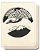
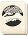

Requires
- Arts:
 

Enables
Effects
- +10% accuracy for all bow units
Description
Advanced training is for those who have already attained skill with the bow, and teaches them to fire with even more accuracy. Practice skirmishes and mock battles prepare men for the real thing, greatly increasing their effectiveness in battle. Training can require an archer to fire up to one thousand arrows a day, making reloading a bow a reflex, not a conscious thought: faster reload times are an important advantage over the slow and laborious process of loading a gun!
Historically, a samurai's expertise with his bow was a good test of his mettle. The bow had been the distinguishing weapon of the samurai before the Sengoku Jidai, and even after guns arrived it was still held in high regard. Military archery was synonymous with mounted archery, whereas firing while on foot was called "civilian" archery, usually practiced away from battle. This was archery as an art: hitting a target was not nearly as important as the archer's form. The poise and grace with which the arrow was drawn back and fired were everything; hitting and killing a target was entirely secondary.